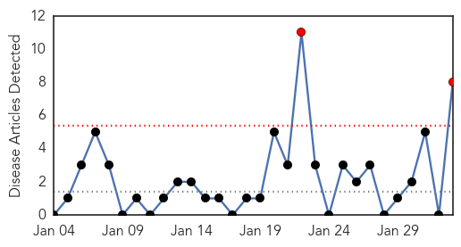

Chikungunya
30-Day Web Trend
2 alerts, 0 warnings

30-Day Twitter Trend
0 alerts, 0 warnings

Article Locations

Article Confidences

Top Articles:
- 0.995
- Virus or Arthritis? Diagnosis Not Always Clear
- 0.993
- Chikungunya Virus Infection Symptoms May Be Similar to Rheumatoid Arthritis
- 0.988
- Canadian health authorities issue Chikungunya travel warning
- 0.983
- Chikungunya Virus Shows Similar Symptoms To Rheumatoid Arthritis, May Cause Misdiagnosis
- 0.970
- Chikungunya Could Mimic Rheumatoid Arthritis Symptoms, Leading To False Diagnosis
- 0.962
- Chikungunya may be misdiagnosed as rheumatoid arthritis, researchers say
- 0.928
- Eleventh Case Of Imported Chikungunya Virus Confirmed In Dallas Co. « CBS Dallas
- 0.870
- Symptoms and Blood Test Results can be Similar for Chikungunya virus and rheumatoid arthritis
Top Tweets:
-
No tweets found for Feb 02, 2015
Mold/Fungal
30-Day Web Trend
0 alerts, 0 warnings

30-Day Twitter Trend
0 alerts, 0 warnings
Article Locations

Article Confidences

Top Articles:
-
No articles found for Feb 02, 2015
Top Tweets:
-
No tweets found for Feb 02, 2015